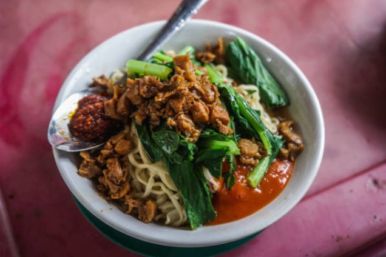

Resep Makanan

Bahan-Bahan Utama
- Mie: 500 gram mie telur atau mie basah khusus mie ayam.
- Sayuran: Sawi hijau (caisim) secukupnya, potong-potong.
- Pelengkap: Daun bawang iris, bawang goreng, dan bakso atau ceker sesuai selera.
Bahan Toping Ayam
- Daging ayam: 500 gram dada/paha ayam fillet, potong dadu kecil.
- Bumbu halus: 8 siung bawang merah, 5 siung bawang putih, 2 ruas jahe, dan 2 ruas kunyit.
- Bumbu aromatik: 2 lembar daun salam, 5 lembar daun jeruk, dan 2 batang serai.
- Penyedap: Kecap manis secukupnya, 1 sdt garam, 1 sdt merica bubuk, dan 1 sdt gula merah.
Cara Membuat Toping Ayam
- Haluskan bumbu seperti bawang merah, bawang putih, jahe, dan kunyit.
- Tumis bumbu halus bersama daun salam, daun jeruk, dan serai sampai harum serta matang tanak
- Masukkan potongan ayam, lalu aduk sampai berubah warna kaku
- Tambahkan kecap manis, garam, merica, dan gula merah, lalu beri sedikit air
- Masak dengan api kecil sampai bumbu meresap dan kuah mengental serta mengeluarkan minyak ayam alami
Cara Penyajian
- Racik mangkuk dengan mencampur sedikit minyak ayam (atau minyak sayur), kecap asin, dan sedikit merica bubuk
- Rebus mie dan sawi di air mendidih hingga matang, lalu angkat dan tiriskan
- Masukkan mie ke dalam mangkuk racikan bumbu, aduk rata
- Beri topping tumisan ayam di atasnya beserta sawi hijau, daun bawang, dan bawang goreng.
kembali ke beranda